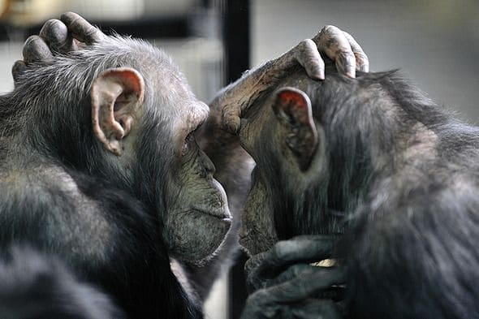
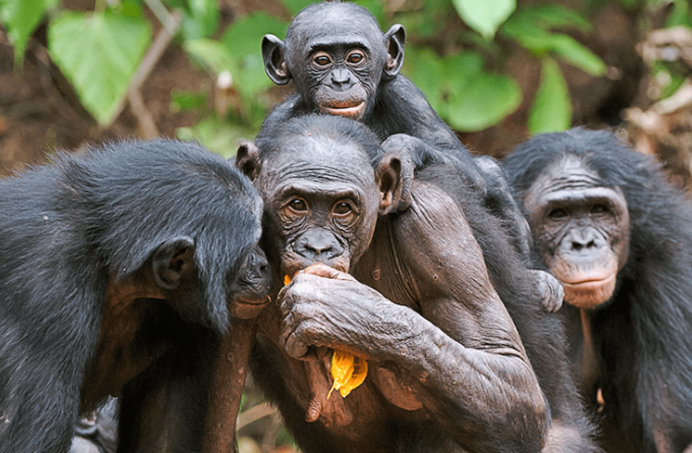
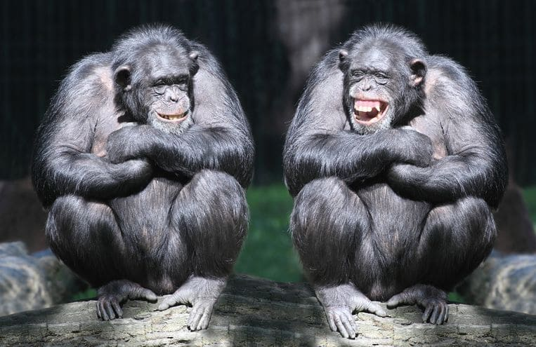

Gedrag en levenswijze
Chimpansees zijn net als bonobo's, orang-oetans, gorilla's en mensen mensapen. Ze lopen meestal op handen en voeten, behalve als ze iets in hun handen hebben of iemand willen laten schrikken. Chimpansees zijn slimme dieren. Ze kunnen bijvoorbeeld een takje veranderen in een stokje en dat in een termietenheuvel steken. De termieten bijten dan in het takje, en als de chimpansee het er voorzichtig uithaalt, zitten ze eraan vast, klaar om opgegeten te worden.
Een chimpansee kan ook onthouden welke vriend hem heeft geholpen met eten krijgen. Bijvoorbeeld als ze samen moeten werken om een tros bananen te pakken te krijgen. Ze delen het eten daarna eerlijk.
Chimpansees leven in groepen, en elke aap heeft zijn eigen plekje in de groep. Soms testen ze hun kracht met stoer gedrag of vechtpartijen. Als een chimpansee terugkomt na een tijdje weg te zijn geweest, krijgt hij knuffels en kusjes van de anderen omdat ze hem gemist hebben.
  Chimpansees leven in groepen van 15 tot 100 apen en bewaken hun territorium. De volwassen mannetjes zijn de baas over de gemeenschappen. Ranghoge mannetjes laten vaak een spectaculair imponeerritueel zien; rennen, roepen, stampen en slaan met overeind gezette haren. Ze willen natuurlijk wel dat de hele groep onder de indruk is! Mannetjes blijven hun hele leven bij dezelfde groep. Vrouwtjes gaan daarentegen naar een andere groep als ze volwassen zijn. Niet altijd is de sterkste man de baas. Vaak is het degene die de meeste vriendjes weet te maken die hem helpen. Een leuk weetje is dat chimpansees elkaar vlooien om vriendschappen te vormen.
Chimpansees tonen zelfs verschillende culturen. Groepen verschillen namelijk in het verzorgen van zichzelf en hun kinderen, de onderlinge omgang, gebruik van voorwerpen of gereedschap. Ze bezitten empathie en kennen verdriet bij het sterven van verwanten.
Hoe slapen chimpansees?
Overdag zijn chimpansees zowel op de grond als in de bomen te vinden. Voordat het ’s avonds donker wordt bouwen ze een nest om in te slapen. Dit doen ze elke avond opnieuw. Ze buigen wat takken naar elkaar toe en maken zo een soort hangmat in de boom. Ze slapen acht tot negen uur in dit nest. Overdag maken chimpansees ook vaak een nest om in te rusten of te spelen. Een chimpansee kan in zijn leven wel 19.000 nesten bouwen. Zijn bed ligt soms wel op een hoogte van 25 meter!